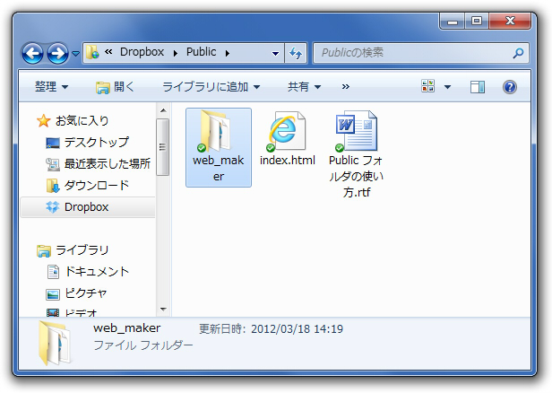
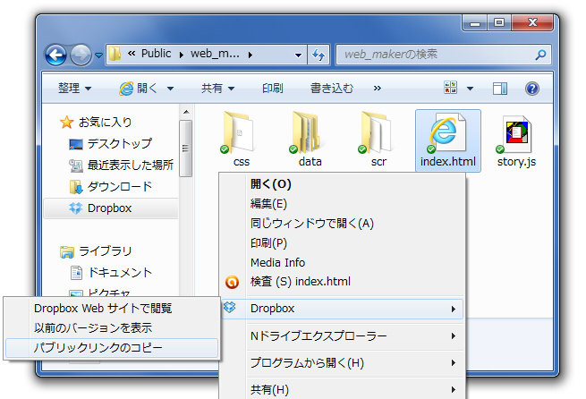

公開はとても簡単です。 うぇぶメイカーは普通のhtmlですので、フォルダをそのままDropBoxやサーバーにアップするだけで使えます。

うぇぶげーメイカーが入ったフォルダをDropBoxの『Public』フォルダにコピーします。
（レンタルサーバーなどを持っている人も、フォルダをコピーするだけです。設定は何もいりません）
※DropBoxのPublicフォルダにいれたhtmlは公開可能です。
終了です！
……。
もう少し説明を続けます（笑）

index.htmlのURLをTwitterやfacebookで皆さんにお伝えしましょう。
1.うぇぶメイカーのフォルダの中にある『index.html』を右クリックします。
2.『Dropbox』の項目にマウスを重ねます。すると上の画像のような項目が現れます。
3.『パブリックリンクのコピー』をクリックします。
4.URLがコピーされていますので、Twitterなどに貼り付けて皆さんにお伝えしましょう。
5.URLにアクセスするだけで、あなたが作ったゲームをプレイすることができます。